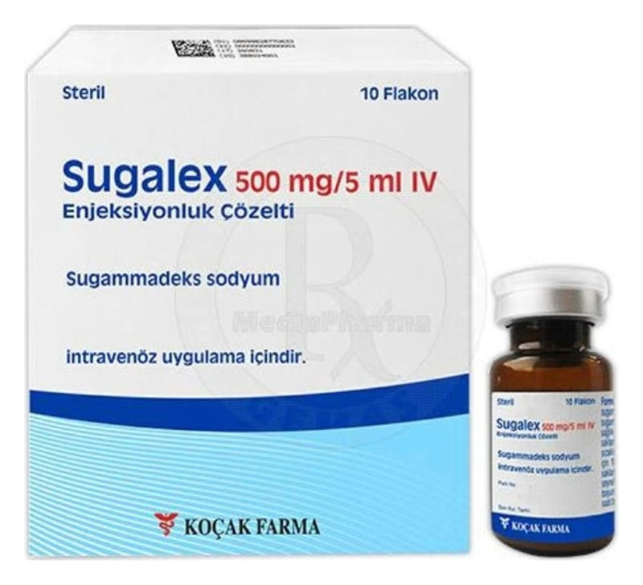

Sugalex 500 mg/5ml IV Enjeksiyonluk Çözelti, 10 ADET

Ne için kullanılır
KT · Bölüm 1SUGALEX etkin madde olarak sugammadeks içerir.
• SUGALEX seçici kas gevşeticileri bağlayıcı madde olarak adlandırılır; çünkü sadece spesifik kas gevşeticileriyle (roküronyum bromür ve veküronyum bromür) birlikte etki gösterir.
• SUGALEX, 5mL’lik 10 adet cam flakon içeren kutular içerisinde ambalajlanmaktadır. 1 mL SUGALEX 100 mg sugammadeks içermektedir.
• SUGALEX, ameliyattan sonra kaslarınızın yeniden işlevlerini yerine getirmesi için kullanılır.
Bazı türdeki ameliyatları olacağınız zaman, kaslarınızın tamamen gevşemesi gerekir. Kaslarınızın gevşemesi ameliyatın yapılması için doktorunuza kolaylık sağlar. Bu amaçla, tüm vücutta uyuşmayı sağlayan ilaçlar kullanılarak kaslarınız gevşetilir. Bunlara kas gevşeticiler denir ve örneğin roküronyum bromür ve veküronyum bromür bu türden ilaçlardır. Bu ilaçlar ayrıca nefes alıp verirken kullandığınız kaslarınızı da gevşettiği için, yeniden kendi kendinize nefes alıp verene kadar ameliyat sırasında ve ameliyattan sonra nefes almak için yardıma ihtiyacınız olur (yapay havalandırma). Bu ilacı kullanmaya başlamadan önce KULLANMA TALİMATINI dikkatlice okuyunuz, çünkü sizin için önemli bilgiler içermektedir. • Bu kullanma talimatını saklayınız. Daha sonra tekrar okumaya ihtiyaç duyabilirsiniz. • Eğer ilave sorularınız olursa, lütfen doktorunuza veya eczacınıza danışınız. • Eğer bu kullanma talimatında bahsi geçmeyen herhangi bir yan etki ile karşılaşırsanız doktorunuzu veya eczacınızı bilgilendiriniz. • Bu ilaç yalnızca uzmanlar tarafından hastanelerde, ameliyat sırasında uygulanabilir. Bireysel kullanım için değildir.
SUGALEX tekrar kendi başınıza solunum yapabilmenize imkan vermek için ameliyattan sonra kaslarınızın iyileşmesini hızlandırmak için kullanılır. SUGALEX bunu vücudunuzdaki roküronyum bromür ya da veküronyum bromür ile birleşerek yapar. SUGALEX yetişkinlerde roküronyum bromür ya da veküronyum bromürün kullanıldığı her durumda ve çocuklarda ve ergenlerde (2-17 yaş arası) roküronyum bromür orta düzeyde gevşeme amaçlı kullanıldığında uygulanabilir.
2. SUGALEX’i kullanmadan önce dikkat edilmesi gerekenler SUGALEX’i aşağıdaki durumlarda KULLANMAYINIZ Eğer; SUGALEX’in içindeki sugammadeks ya da diğer maddelere karşı aşırı duyarlılığınız varsa, bu durumu anestezi uzmanınıza söyleyiniz.
SUGALEX’ i aşağıdaki durumlarda DİKKATLİ KULLANINIZ
Eğer; - SUGALEX böbrekler yoluyla vücuttan atıldığı için geçmişte böbrek hastalığı yaşadıysanız veya şu anda yaşıyorsanız, - Geçmişte karaciğer hastalığınız olduysa veya şu anda karaciğer hastalığınız varsa. - Vücudunuz su topluyorsa (ödem), - Kanama riskini arttırdığı bilinen hastalıklarınız varsa (kanın pıhtılaşmasında bozukluklar) veya pıhtılaşmayı önleyici ilaç alıyorsanız.
Bu durumları anestezi uzmanınıza söyleyiniz.
Bu uyarılar geçmişteki herhangi bir dönemde dahil olsa sizin için geçerliyse lütfen doktorunuza danışınız.
Çocuklar ve ergenler Bu ilaç 2 yaşından küçük bebeklere önerilmez.
SUGALEX’in yiyecek ve içecek ile kullanılması: Ameliyat sırasında ve ameliyattan sonra yeniden kendi kendinize nefes almak için kullanılan SUGALEX için, ameliyat öncesinde herhangi bir şey yemediğimiz ve içmediğimiz için aç olmanız gerektiği doktorunuz veya anestezi uzmanınız tarafından size önerilecektir.
Hamilelik İlacı kullanmadan önce doktorunuza veya eczacınıza danışınız.
Eğer hamile iseniz veya hamile olup olmadığınızdan emin değilseniz veya emziriyorsanız bu durumu anestezi uzmanınıza söyleyiniz.
Hamile olsanız da SUGALEX almaya devam edebilirsiniz, ancak ilk önce bunu doktorunuzla görüşmelisiniz.
Tedaviniz sırasında hamile olduğunuzu fark ederseniz hemen doktorunuza veya eczacınıza danışınız.
Emzirme İlacı kullanmadan önce doktorunuza veya eczacınıza danışınız.
Emziriyorsanız bu durumu anestezi uzmanınıza söyleyiniz. Sugammadeksin anne sütüne geçip geçmediği bilinmemektedir. Bebeği emzirmenin faydası ve SUGALEX’in annenin tedavisine yararı göz önünde bulundurularak, emzirmeyi kesmek ya da sugammadeks tedavisini kesip/kesmemek konusunda anestezi uzmanınız karar vermenize yardımcı olacaktır.
Araç ve makine kullanımı SUGALEX’in araç ve makine kullanma becerisi üzerinde herhangi bir bilinen etkisi bulunmamaktadır.
SUGALEX’in içeriğinde bulunan bazı yardımcı maddeler hakkında önemli bilgiler Bu ilaç her 1 mL başına 23 mg’den daha az sodyum (yemek pişirmenin temel bileşeni/sofra tuzu) içerir; yani aslında “sodyum içermez”. Eğer 2,4 mL ve üzerinde çözeltinin uygulanması gerekiyorsa, hastanın kontrollü sodyum diyetinde olup olmadığı dikkate alınmalıdır. Kontrollü sodyum diyetine devam ediyorsanız, bunu anestezi uzmanınıza söyleyiniz.
Diğer ilaçlarla birlikte kullanımı SUGALEX ve diğer bazı ilaçlar birbirleriyle etkileşebilir. Şu anda almakta olduğunuz ya da yakın zamanda aldığınız reçeteli veya reçetesiz ilaçları, anestezi uzmanınıza söyleyiniz.
Bazı ilaçlar SUGALEX’in etkisini azaltır. Aşağıdaki ilaçları yakın bir tarihte aldıysanız bunları anestezi uzmanınıza söylemeniz önemlidir: • Toremifen (meme kanserinin tedavisinde kullanılır) • Fusidik asit (bir tür antibiyotik)
SUGALEX hormonal doğum kontrol ilaçlarını etkileyebilir.
SUGALEX vücudunuzda üretilen progestojen hormonunu (üreme ile ilgili bir tür hormon) azalttığı için, hap, vajinal halka, implant ya da hormonal Rahim İçi Araç (spiral-RIA) dahil olmak üzere hormonal doğum kontrol ilaçlarının daha az etkili olmasına neden olabilir. SUGALEX kullanımına bağlı progestojen hormonundaki azalma miktarı, bir doz oral kontraseptif (doğum kontrol ilacı) atlanmasına eşittir.
→ Eğer SUGALEX aldığınız gün hap alırsanız, hapın kullanma talimatındaki atlanan doz durumunda yapılması gerekenleri uygulayınız.
→ Diğer hormonal doğum kontrol yöntemlerini (örneğin, vajinal halka, implant ya da RİA) kullanıyorsanız sonraki 7 gün boyunca hormon içermeyen ilave bir doğum kontrol yöntemi (prezervatif gibi) kullanmalısınız ve kullanma talimatındaki tavsiyelere uymalısınız.
Kan testlerine olan etkiler Genel olarak, SUGALEX’in laboratuvar testlerine etkisi yoktur. Ancak, progestojen adlı hormon için yapılan kan testinin sonuçlarını etkileyebilir. SUGALEX aldığınız gün progesteron düzeylerinizin test edilmesi gerekiyorsa doktorunuzla konuşunuz.
Eğer reçeteli ya da reçetesiz herhangi bir ilacı şu anda kullanıyorsanız veya son zamanlarda kullandınızsa lütfen doktorunuza veya eczacınıza bunlar hakkında bilgi veriniz.